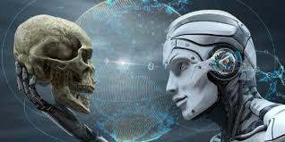

Что такое искусственный интеллект?
Искусственный интеллект (ИИ) — это область компьютерных наук, которая занимается созданием систем, способных выполнять задачи, требующие человеческого интеллекта. Такие задачи включают в себя обучение, восприятие, принятие решений и решение проблем. В основе ИИ лежат сложные алгоритмы и модели, которые позволяют машинам анализировать данные, распознавать закономерности и адаптироваться к изменениям. ИИ уже применяется в различных сферах жизни: от голосовых помощников, таких как Siri и Alexa, до сложных аналитических систем в медицине и финансовой отрасли.
Нажмите на картинку, чтобы прочитать подробнее про ИИ

Как ИИ помогает человечеству?
Искусственный интеллект приносит человечеству многочисленные преимущества, облегчая повседневные задачи, улучшая качество жизни и ускоряя научный прогресс. Рассмотрим несколько основных направлений, где ИИ оказывает значительное влияние:
Нажмите на этот текст чтобы увидеть содержание

Опасности и вызовы ИИ
Несмотря на все преимущества, искусственный интеллект также несет в себе потенциальные угрозы и вызовы, которые требуют внимательного изучения и контроля. Некоторые из них связаны с технологическими рисками, другие — с этическими и социальными аспектами.
Нажмите на картинку чтобы увидеть содержание
Заключение
Искусственный интеллект — это мощный инструмент, который уже изменяет наш мир и будет оказывать ещё более
сильное влияние в будущем. Он способен решать многие проблемы человечества: улучшать медицинские услуги,
повышать эффективность производства и автоматизировать рутинные задачи. Однако, несмотря на его многочисленные
преимущества, мы должны осознавать и потенциальные риски. Автоматизация рабочих мест, киберугрозы, этические
вопросы и возможность потери контроля над ИИ требуют серьёзного внимания и разработки строгих норм регулирования.
Таким образом, будущее искусственного интеллекта зависит от того, как мы сможем справиться с вызовами и рисками,
которые он приносит. Только ответственное развитие и использование ИИ сможет обеспечить его пользу для человечества
и предотвратить возможные катастрофические последствия.
Tashenov Ramazan